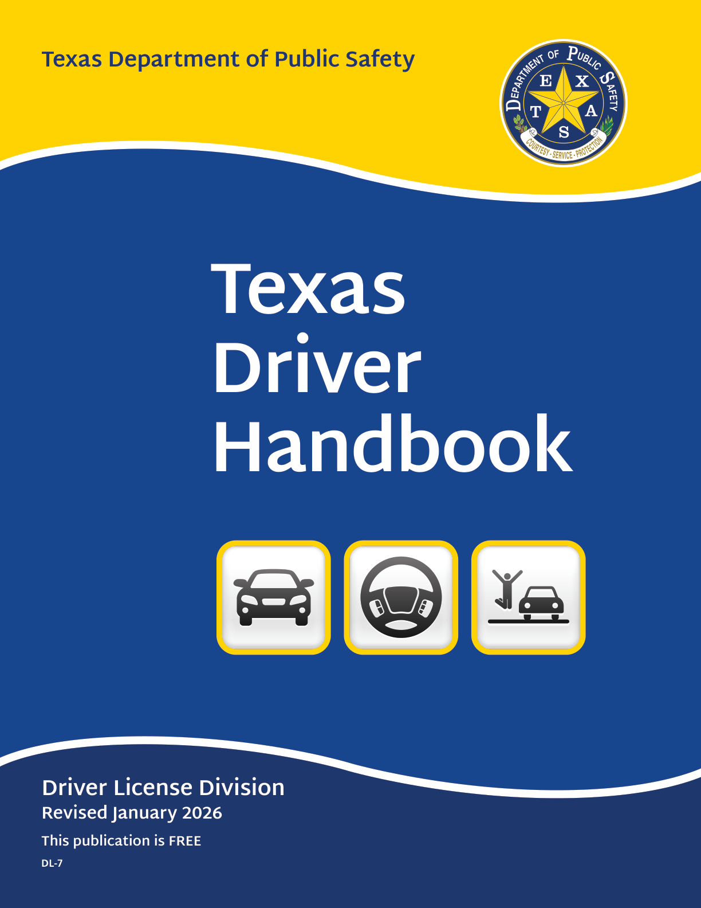

Texas Department of Public Safety
Texas Driver Handbook
Driver License Division
Revised January 2026
This publication is FREE
DL-7
Introduction
The Texas Department of Public Safety, Driver License Division, is committed to creating a faster, easier, and friendlier driver license experience and a safer Texas. One step toward achieving these important goals is to continuously improve the Texas Driver Handbook by providing you with accurate information on traffic laws, clear images of road signs, examples of common driving situations, and general safety tips. We have also included special tips to emphasize important information you need to know.
Although the Texas Driver Handbook has been revised, its primary purpose remains the same: 1) to help you qualify for a Texas driver license, and 2) to help you become a safer driver.
The information contained in this handbook is not an official legal reference to Texas traffic laws. The information provided is only intended to explain applicable federal and state laws you need to understand in order to successfully operate a motor vehicle in Texas. If you would like to know the actual language of any traffic or criminal laws referenced in this handbook, please refer to the Texas Transportation Code and Texas Penal Code.
Once you receive your Texas driver license, keep this handbook as a reference on traffic safety and update it as needed. The Texas Legislature meets every two years and regularly makes changes to traffic laws. For the most current information on driver licensing, visit our website at http://www.dps.texas.gov/DriverLicense/.
Contact Us
Please contact us if you have any questions regarding this handbook or if you need additional information.
Email the Customer Service Center at: https://www.dps.texas.gov/DriverLicense/customer_service/Other.aspx
Mailing Address: Texas Department of Public Safety Driver License Division PO Box 4087 Austin, TX 78773-0300
If you need to contact your local driver license office directly, refer to Appendix B in this handbook to locate a driver license office in your area.
If you would like to provide feedback on the information in this handbook visit, https://survey.utexas.edu/dld.
ADA Accommodations
If you need to make special arrangements to accommodate a disability prior to visiting a driver license office, you can e-mail us at https://www.dps.texas.gov/DriverLicense/customer_service/Other.aspx. Please contact us at least five to seven business days prior to your visit to allow us time to accommodate your request.
If you are in need of assistance but fail to receive reasonable accommodations, you may have grounds for a grievance.
DPS Grievance Procedures can be found in the 37 Texas Administrative Code §1.41, http://www.sos.texas.gov/tac/ and on our website at www.dps.texas.gov.
The Texas Department of Public Safety does not discriminate on the basis of race, color, religion, sex, national origin, age, or disability.
The information contained in the Texas Driver Handbook is the property of the Texas Department of Public Safety and may not be modified in any way for distribution or publication without the express prior written consent of the Department.
Dear Texas Resident:
Operating a motor vehicle is an important privilege and responsibility for drivers, especially in a state as large as Texas with more than 314,000 miles of public roadways. Tragically, every year in Texas, approximately 3,500 people are killed in traffic crashes and more than 15,000 are seriously injured. Today, more than ever, drivers must avoid distractions in their own vehicle while also staying alert for impaired or unsafe drivers sharing the roadway – failing to do so could have tragic consequences.
The goal of the Texas Department of Public Safety is to provide you with critical safety information about driving in Texas in an effort to keep you, your passengers and other travelers safe on our roadways. Please carefully review and learn the information in this handbook, and always be mindful of the great responsibility that goes with obtaining a driver license and operating a motor vehicle in Texas.
Respectfully,
Freeman F. Martin Colonel Texas Department of Public Safety
Table of Contents
-
Chapter 1: Your License to Drive
1
- Who May Drive a Motor Vehicle in Texas? 1
- Types of Texas Driver Licenses 1
- Classes of Driver Licenses 3
- Fees and Driver Licenses for Veterans 5
- Identification (ID) Cards 5
- Medical and Emergency Information 5
- Organ Donation 6
- Voluntary Contributions 6
- How to Obtain a Texas Driver License 6
- Driver Education 7
- Penalties for Driving Without a License 9
- Restrictions Placed on a License 9
- Replacement (Duplicate) or Change of Information on a Driver License or ID Card 9
- Renewing a License 9
- Suspensions and Revocations 10
- Cancellations 12
- Court-Ordered Suspensions, Revocations, and Cancellations 12
- Denials 13
- Driving While License Invalid (DWLI) 13
- Penalties for Non-Driving Alcohol-Related Offenses by Minors 13
- Occupational License (Essential Need License) 14
- Chapter 2: Vehicle Inspection and Registration 15
- Chapter 3: Safety Responsibility 18
- Chapter 4: Right-of-Way 20
- Chapter 5: Signals, Signs, and Markers 25
- Chapter 6: Signaling, Passing, and Turning 38
- Chapter 7: Parking, Stopping, or Standing 42
- Chapter 8: Speed and Speed Limits 45
-
Chapter 9: Some Special Driving Situations
47
- Headlights 47
- Highway Driving 47
- Controlling a Car in Special Situations 48
- Winter Driving 49
- Roundabouts 49
- Floods 50
- Share the Road with Trucks (Large trucks and truck-tractor combinations) 51
- Share the Road with Motorcycles 52
- Share the Road with Light Rail 53
- Share the Road with Bicycles 53
- Distracted driving 54
- Texting While Driving 54
- Chapter 10: Alcohol and Drug Impact on the Driving Ability 55
- Chapter 11: Motor Vehicle Crashes 59
- Chapter 12: Pedestrian Safety 61
- Chapter 13: Bicycle Laws and Safety 62
- Chapter 14: Additional Safety Tips 64
-
Appendix A: Glossary of Terms
69
-
Appendix B: Driver License Offices
75
- Appendix C 76
-
Appendix D: Fees
79
-
Appendix E: Restriction Codes
81